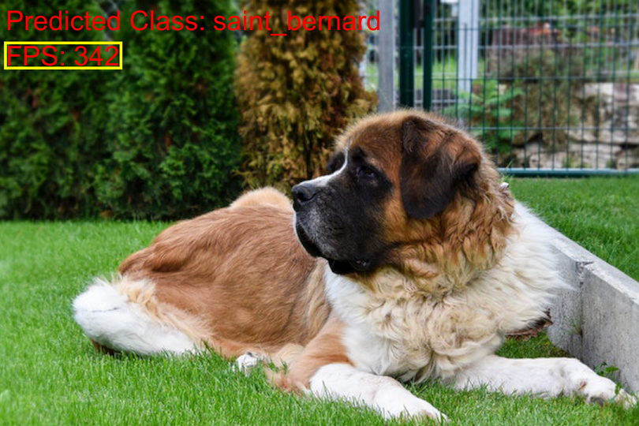

Getting Started With Deep Learning in Unity
- Introduction
- The Barracuda Library
- Exporting Models to ONNX
- Loading Models
- Executing Models
- Working with Data
- Summary
Introduction
Most deep learning models get deployed to servers instead of user devices. Server-side inference comes with many advantages, like complete control over the runtime environment and the option to scale computing resources up and down as needed. It can also be the only feasible way to run extremely-large models like GPT-3.
However, running models on user devices can provide compelling cost, latency, and privacy benefits. There are no servers to maintain, no lag from poor internet connections, and no user data to protect. The latency benefits can be particularly significant for interactive real-time applications.
Unity is one of the best platforms for developing real-time 2D, 3D, VR, and AR applications. Its core competency is game development, but it also works well for other immersive and interactive applications.
There are many potential ways to leverage deep learning in Unity applications, including mapping user movement to virtual avatars, generating character dialogue, and powering enemy AI to name a few. Below are some examples from personal projects.
In-Game Style Transfer
Pose Estimation
Object Detection
These examples only scratch the surface of what’s possible by combining deep learning models with powerful real-time creation tools like Unity and Unreal Engine. The Barracuda library makes it easy to start exploring these possibilities.
The Barracuda Library
Barracuda is a neural network inference library for the Unity game engine. It initially focused on models trained with Unity’s Deep Reinforcement Learning toolkit, ML-Agents, but has expanded support over time.
Barracuda provides multiple backends for both CPU and GPU inference. The fastest CPU backend uses the Burst compiler, which translates IL/.NET bytecode into highly-optimized native code using LLVM. The most performant GPU backend uses Compute shaders. Compute shaders are programs written in High-level shader language (HLSL) that run on the GPU, outside the standard rendering pipeline.
Some platforms don’t support Compute shaders, so Unity recently added a Pixel Shader backend to enable GPU inference on platforms where Compute shaders are not supported. While faster than CPU inference, it is significantly slower than the Compute shader backend in my testing.
One of Barracuda’s greatest strengths is its cross-platform support. As of writing, Barracuda does not support specialized inference hardware, quantization, or even FP16 precision. However, it runs wherever Unity does, which is nearly everywhere.
Exporting Models to ONNX
Barracuda works with models in the ONNX file format. PyTorch provides built-in support to export models to ONNX.
torch.onnx.export(learn.model.cpu(),
batched_tensor,
onnx_file_name,
export_params=True,
opset_version=9,
do_constant_folding=True,
input_names = ['input'],
output_names = ['output'],
)We can use the tf2onnx python package to convert TensorFlow models.
python -m tf2onnx.convert --saved-model ./savedmodel --opset 10 --output model.onnxBarracuda maps ONNX operators to backend-specific implementations, so model support depends on what operators Unity implements for a given inference backend. One could theoretically implement missing operations themselves, but it would probably make more sense to explore other inference options at that point. Another option is to tweak the model architecture to ensure it only uses supported operations.
Loading Models
Unity imports ONNX models as an NNModel asset.
[Tooltip("The Barracuda/ONNX asset file")]
public NNModel modelAsset;These then compile into a Model object at runtime.
// Get an object oriented representation of the model
m_RunTimeModel = ModelLoader.Load(modelAsset);Executing Models
Barracuda has an IWorker interface that abstracts implementation details for different inference backends. It is responsible for translating the Model object into a set of operations and executing them.
// Create a worker to execute the model using the selected backend
IWorker engine = WorkerFactory.CreateWorker(workerType, m_RunTimeModel);Barracuda can run models in a single frame or across multiple using Coroutines. The latter option can help maintain smooth frame rates when using more demanding models.
// Execute the model with the input Tensor
engine.Execute(input);Working with Data
Barracuda stores data in multi-dimensional array-like objects called Tensors.
Initializing Tensors
We can initialize an input Tensor from an array for CPU data, a ComputeBuffer for general GPU data, or a Texture2D or RenderTexture for image data.
Initialize from an array
// Normal single-dimensional array
float[] tensorData = new float[]
{
0f, 1f, 2f,
3f, 4f, 5f,
6f, 7f, 8f
};
Tensor tensor = new Tensor(n: 1, h: 3, w: 3, c: 1, tensorData);Initialize from image data
// Initialize a Tensor using the inputTexture
Tensor input = new Tensor(inputTexture, channels: 3);Accessing Tensor Elements
We can access Tensor elements using multi-dimensional array operators.
// Normal single-dimensional array
float[] tensorData = new float[]
{
0f, 1f, 2f,
3f, 4f, 5f,
6f, 7f, 8f
};
// Batch size: 1, Height: 3, Width: 3, Channels: 1
Tensor tensor = new Tensor(n: 1, h: 3, w: 3, c: 1, tensorData);
Debug.Log($"Tensor shape: {tensor.shape}");
Debug.Log($"First element in flat array: {tensor[0]}");
Debug.Log($"Second row, third column: {tensor[0, 1, 2, 0]}");
tensor.Dispose();
// Batch size: 1, Height: 1, Width: 3, Channels: 3
tensor = new Tensor(n: 1, h: 1, w: 3, c: 3, tensorData);
Debug.Log($"Tensor shape: {tensor.shape}");
Debug.Log($"First element in flat array: {tensor[0]}");
Debug.Log($"First row, first column, second channel: {tensor[0, 0, 0, 1]}");
Debug.Log($"First row, second column, third channel: {tensor[0, 0, 1, 2]}");
tensor.Dispose();Output
Tensor shape: (n:1, h:3, w:3, c:1)
First element in flat array: 0
Second row, third column: 5
Tensor shape: (n:1, h:1, w:3, c:3)
First element in flat array: 0
First row, first column, second channel: 1
First row, second column, third channel: 5Retrieving Model Output
We can download model output to the CPU or copy it to a RenderTexture to keep the data on the GPU, as shown below.
// Get raw model output
Tensor output = engine.PeekOutput(outputLayer);
// Copy model output to a RenderTexture
output.ToRenderTexture(outputTextureGPU);Reading model output from the GPU to the CPU causes a pipeline stall as Unity prevents any execution on the main thread to prevent the data from changing before it has finished downloading to the CPU. The pipeline stall can cause a noticeable performance bottleneck that increases with the amount of data we need to download.
This performance bottleneck is not an issue when the model output can stay on the GPU like when performing artistic style transfer. However, reading the prediction of a simple image classifier to the CPU can cap GPU utilization from approximately 100% to around 60%.
Standard GPU Readback

Fortunately, Unity provides a method to read data from the GPU asynchronously called AsyncGPUReadback.Request(). The one drawback to this method is that it adds a few frames of latency. That should not be noticeable as long as the frame rate is high enough.
Asynchronous GPU Readback

Processing Data
We typically need to manually implement preprocessing steps like applying ImageNet normalization to input images. We can implement these preprocessing steps on the CPU using C# scripts or on the GPU using Compute shaders (when supported) or Fragment Shaders. Naturally, we want to perform image preprocessing on the GPU when possible.
ImageNet Normalization Compute shader
// Each #kernel tells which function to compile; you can have many kernels
#pragma kernel NormalizeImageNet
// The pixel data for the input image
Texture2D<float4> InputImage;
// The pixel data for the processed image
RWTexture2D<float4> Result;
// Apply the ImageNet normalization stats from PyTorch to an image
[numthreads(8, 8, 1)]
void NormalizeImageNet(uint3 id : SV_DispatchThreadID)
{
// Set the pixel color values for the processed image
Result[id.xy] = float4(
// Normalize the red color channel values
(InputImage[id.xy].r - 0.4850f) / 0.2290f,
// Normalize the green color channel values
(InputImage[id.xy].g - 0.4560f) / 0.2240f,
// Normalize the blue color channel values
(InputImage[id.xy].b - 0.4060f) / 0.2250f,
// Ignore the alpha/transparency channel
InputImage[id.xy].a);
}We can sometimes use Barracuda to handle postprocessing by adding additional layers to the end of models, like Sigmoid, Softmax, and Argmax, at runtime.
// Create a model builder to modify the m_RunTimeModel
ModelBuilder modelBuilder = new ModelBuilder(m_RunTimeModel);
// Add a new Softmax layer
modelBuilder.Softmax(softmaxLayer, outputLayer);
// Add a new Argmax layer
modelBuilder.Reduce(Layer.Type.ArgMax, argmaxLayer, softmaxLayer);
// Create a worker to execute the model using the selected backend
IWorker engine = WorkerFactory.CreateWorker(workerType, modelBuilder.model);Otherwise, we need to implement those manually as well.
// Get raw model output
Tensor output = engine.PeekOutput(outputLayer);
// Initialize vector for coordinates
Vector2 coords = new Vector2();
// Process estimated point coordinates
for (int i = 0; i < output.length; i++)
{
coords[i] = ((output[i] + 1) / 2) * inputDims[i] * (imageDims[i] / inputDims[i]);
}Summary
This post introduced the Barracuda inference library for the Unity game engine. Barracuda is not the only option to perform inference in Unity, but it provides a good starting point. A follow-up tutorial series will walk through training a model using the fastai library, exporting it to ONNX format, and performing inference with it in a Unity project using the Barracuda library.